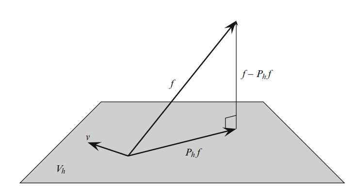
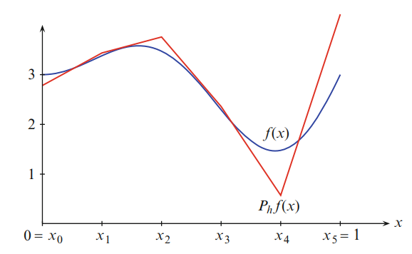

FEM theory <<
Previous Next >> 2 Dimension
1 Dimension
1.1.1分段多項式空間
1.1.1 線性多項式空間
假設$I=\left[x_{0}, x_{1}\right]$，$P_{1}(I)$表示成空間向量線性方程式，我們可得到下列定義式
$P_{1}(I)=\left\{v: v(x)=c_{0}+c_{1} x, x \in I, c_{0}, c_{1} \in \mathbb{R}\right\}$
由上面定義式可得知$P_{1}(I)$在$v(x)=c_{0}+c_{1} x$中包含了所有形式的函數，也就是說$P_{1}(I)$是一個單項式$\{1, x\}$，其集合位於1~X之間。在$v(x)=c_{0}+c_{1} x$中$v$被$1 \times C_{0}+1 \times C_{0} x$明確定義，這就是所謂的線性組合係數，由此可知v有兩個自由度且由c0、c1掌握。
對於v來說其自由度不僅僅只有$c_{0}$、$c_{1}$，根據線性定義一條線由兩點連線形成，由此可得知v的自由度有許多組，特別的是V的值$\alpha_{0}=v\left(x_{0}\right)$、$\alpha_{1}=v\left(x_{1}\right)$可藉由$I$的$x_{0}$、$x_{1}$求得
為了證明上述理論，我們假設已知$\alpha_{0}=v\left(x_{0}\right)$、$\alpha_{1}=v\left(x_{1}\right)$
$\left[\begin{array}{ll}1 & x_{0} \\ 1 & x_{1}\end{array}\right]\left[\begin{array}{l}c_{0} \\ c_{1}\end{array}\right]=\left[\begin{array}{l}\alpha_{0} \\ \alpha_{1}\end{array}\right]$
1.3 $L^2$-投影
插值是逼近連續函數的一種簡單方法，但是還有其他方式。本節將研究正交或$ L^2$ -投影。 $L^2 $-投影的平均近似值可以說不錯，但與插值相反，插值在節點上是精確的。而且與插值相比， $L^2$ -投影不需要我們尋求近似的函數保持連續或具有明確定義的節點值。
1.3.1定義
給定一個函數 $f\in L^2(I) 的 L^2$投影 $P{\scriptsize {\tiny h} } f\in V{\tiny h} $定義為
$\int_{I}\left(f-P_{h} f\right) v d x=0, \quad \forall v \in V_{h}$ (1.36)
圖1.5 函數$f$及其在空間 $V{\tiny h} $上的$L^{2}$-投影 $P{\tiny h} f $的圖示

圖1.6 $f(x)=2 x \sin (2 \pi x)+3$和它在$$L^{2}$$-投影$P_{h} f$上的均勻網格$ I=[0,1] $有六個節點, $i=1,2,...,6$

與投影到$\mathbb{R} ^n$ 的子空間類似，（1.34）定義$f$的投影到$ V{\tiny h}$ 上，因為差$ f - P{\tiny h} f $必須與所有函數正交$ v$在 $V{\tiny h} f$中。如圖1.5所示。
稍後我們將看到，$P_{h} f$是是 $min_{{\scriptsize v } \in V {\tiny h} } \left \| f-v \right \| _{L^2(I)} $的極小值因此我們說它在最小二乘意義上近似於$f$。實際上，$P_{h} f$是測量誤差$f-P_{h} f$時對$f$的最佳近似$L^{2}$範數中。
在圖1.6中，我們顯示了$f(x)=2 x \sin (2 \pi x)+3$的$L^{2}$ -投影。 與用於顯示連續分段線性插值的網格相同,圖1.4中的$f$。比較這兩個近似值是有益的，因為它突出了它們的不同特徵。插值$f$精確地逼近$f$在節點處，而$L^2$投影$P{\tiny h} f$平均接近 $f $。這樣做因此，$P_{h} f$超過或低於枝條的局部最大值和最小值是很常見的。$f$分別。而且，內插和$L^2$-投影都存在困難具有近似快速振盪或不連續的函數，除非該節點位置已適當調整。
1.3.2線性方程組的推導
為了實際計算$L^{2}$-投影$P_{h} f$，我們首先要注意定義（1.36）等同於
$\int_{I}\left(f-P_{h} f\right) \varphi_{i} d x=0, \quad i=0,1, \ldots, n$ (1.37)
$\varphi_{i}, i=0,1, \ldots, n$，是帽子函數。這是事實的結果，如果（1.36）成立於v的帽子函數的人，那麼它也滿足對於v帽子函數的線性組合。相反，由於$V_{h}$中的任何函數v為正是這樣的帽子函數的線性組合，（1.37）意味（1.36）。然後，由於$P_{h} f$屬於$V_{h}$，因此可以寫成線性組合
$P_{h} f=\sum_{j=0}^{n} \xi_{j} \varphi_{j}$ (1.38)
其中$\xi _{j},j=0,1,...,n $,是要確定的$n + 1$個未知係數。插入（1.38）變成（1.37）我們得到
$\int_{I} f \varphi_{i} d x=\int_{I}\left(\sum_{j=0}^{n} \xi_{j} \varphi_{j}\right) \varphi_{i} d x$ (1.39)
$b_{i}=\int_{I} f \varphi_{i} d x, \quad i=0,1, \ldots, n$ (1.40)
進一步介紹符號
$M_{i j}=\int_{I} \varphi_{j} \varphi_{i} d x, \quad i, j=0,1, \ldots, n$ (1.41)
$b_{i}=\int_{I} f \varphi_{i} d x, \quad i=0,1, \ldots, n$ (1.42)
$b_{i}=\sum_{j=0}^{n} M_{i j} \xi_{j}, \quad i=0,1, \ldots, n$ (1.43)
對於$n + 1$個未知係數$\xi _{j},j=0,1,...,n$ ，它是$ (n + 1)\times (n + 1) $線性系統。以矩陣形式，我們這樣寫
$M \xi=b$ (1.44)
其中$(n+1) \times(n+1)$矩陣$M$和$(n+1) \times 1$向量b,分別由（1.41）和（1.42）定義。
因此，我們得出結論，係數$\xi_{j}, j=0,1, \ldots, n$在方法（1.38 ) 中滿足一個正方形的線性系統，其必須以獲得$L^{2}$-投影$P_{h} f$來解決。
由於歷史原因，我們將$M$稱為質量矩陣，將$b$稱為載荷向量。
1.3.3計算$L^2$-投影的基本算法
以下算法總結了計算$L^2$-投影的基本步驟 $P{\tiny h}f$：
算法:計算$L^2$投影的基本算法
1:在間隔$I$上創建具有$n$個元素的網格，並定義相應的間隔連續分段線性函數$V{\tiny h}$ 。
2:計算$(n + 1)\times (n + 1)$矩陣$M$和$(n + 1)\times $1個向量$b$
$M_{ij} =\int_{I}^{} \varphi _{j} \varphi _{i} dx, bi=\int_{I}^{} f\varphi _{i} dx$ (1.45)
3:求解線性系統
$M\xi =b$ (1.46)
4:設置
$P{\tiny h} f=\sum_{j=0}^{n} \xi _{j} \varphi _{j}$ (1.47)
1.3.4先驗誤差估計
我們希望得出誤差 $f-P{\tiny h}f$ 的界限。下一個定理給出得出此類誤差估計的關鍵結果。這就是所謂的最佳近似結果。
定理1.1。在$L^2$ -投影 $P{\tiny h}f $，由下式定義（1.36），可以滿足最好的大概- 模擬結果
$\left \| f-P{\tiny h} f \right \| _{L^2(I)} \le \left \| F-V \right \| _{L^2(I)} , \forall V\in V{\tiny h} $ (1.48)
證明。 使用$L^2$-範數的定義並寫出$f-P{\tiny h} f=f-v+v-P{\tiny h} f$，通過$v$在$V{\tiny h}$ 中的任意函數
$\left \| f-P{\tiny h} f \right \| _{L^2(I)}^{2} =\int_{I}^{} \left ( f-P{\tiny h} f \right )\left ( f-v+v-P{\tiny h} f \right ) dx$ (1.49)
$\int_{I}^{} \left ( f-P{\tiny h} f \right )\left ( f-v \right ) dx+\int_{I}^{} \left ( f-P{\tiny h} f \right )\left ( v-P{\tiny h} f \right ) dx$ (1.50)
$\int_{I}^{} \left ( f-P{\tiny h} f \right )\left ( f-v \right ) dx$ (1.51)
$\le \left \| f-P{\tiny h} f \right \| _{L^2(I)} \left \| f-v \right \| _{L^2(I)}$ (1.52)
在這我們使用$L^2$投影的定義來得出結論
$\int_{I}^{} \left ( f-P{\tiny h} f \right )\left ( v-P{\tiny h} f \right ) dx =0$ (1.53)
由於$ v-P{\tiny h} f\in V{\tiny h}$ 。除以$\left \| f-P{\tiny h} f \right \| _{L^2(I)} $
證明結論。這表明在測量時， $P{\tiny h} f $是$V_{h}$中所有函數中最接近$f$的函數。
$L^{2}$-範數 因此，名稱最佳近似結果。我們可以將最佳逼近結果與插值估算一起使用研究誤差$f-P_{h} f$取決於網格尺寸。這樣，我們可以遵循基本的所謂先驗誤差估計。
定理1.2。在$L^{2}$-投影$P_{h} f$滿足估計
$\left\|f-P_{h} f\right\|_{L^{2}(I)}^{2} \leq C \sum_{i=1}^{n} h_{i}^{4}\left\|f^{\prime \prime}\right\|_{L^{2}\left(I_{i}\right)}^{2}$ (1.54)
證明。從最佳逼近結果開始，選擇內插值 $v=\pi f$ ，並使用命題1.1的插值誤差估計，
$\left\|f-P_{h} f\right\|_{L^{2}(I)}^{2} \leq\|f-\pi f\|_{L^{2}(I)}^{2}$ (1.55)
$\leq \sum_{i=1}^{n}\|f-\pi f\|_{L^{2}\left(I_{i}\right)}^{2}$ (1.56)
$\leq \sum_{i=1}^{n} C h_{i}^{4}\left\|f^{\prime \prime}\right\|_{L^{2}\left(I_{i}\right)}^{2}$ (1.57)
這證明了估計。
定義$ h=max_{1} \le {\tiny i} \le {\tiny n} h{\tiny i}$ ，我們得出結論：
$\left\|f-P_{h} f\right\|_{L^{2}(I)} \leq C h^{2}\left\|f^{\prime \prime}\right\|_{L^{2}(I)}$ (1.58)
因此，隨著最大網格尺寸h的增加，$L^{2}$誤差$\left \| f-P{\tiny h} f \right \| _{L^2(I)}^{}$ 趨於零。
FEM theory <<
Previous Next >> 2 Dimension